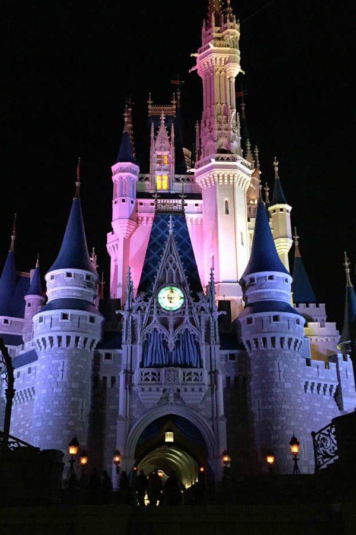
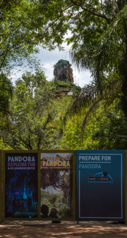

My Vist to Disneyworld

I remember my trip to Disneyworld in Orlando Florida. It was a few years ago and it was the best trip of my life. I remember flying to Orlando. Orlando is one of the busiest tourist locations in Florida, perhaps even busier than the infamous Miami beaches. This is because Orlando hosts many locations that cater to all kinds of people, whether they are children, men, women, adults, senior citizens, or foreigners. Orlando has many theme parks located on its famous strip, including Disneyworld, Wet n' Wild, Universal Studios, Epcot Center, Ripley's Believe it or Not House. Sea World, and a host of other tourist locations. And out of all these places, the most interesting place to be at is Disneyworld.
It is of no surprise that many adults have found Disneyworld to be an extremely entertaining, including me. Even though most of the rides are meant for the children, the adults can take pleasure in being inside an architectural piece of wonderland. The Magic Kingdom is divided into many areas, and one of the most prominent, the area that comes in as soon as you enter the Magic Kingdom is the Main Street, USA. This street is made up of various architectural styles from the various states of USA, with much of the style being influence by Missouri and New England. The buildings on Main Street are built in such a way that they seem to be bigger than they actually are; the second story is smaller than the first, and the third smaller than the second is, giving the buildings a larger-than-life image. At the end of the Main Street is Cinderella's Castle, which is the trademark of the Magic Kingdom. You really have to see it to appreciate its magical realm.
Even though most of the rides and entertainment present inside the Magic Kingdom is meant for the kids, this does not mean that adults cannot enjoy them. The Magic Kingdom offers many packages and incentives for young couples to visit and there are more than a few freshly married people who have visited the Magic Kingdom for their honeymoon. Overall, the Magic Kingdom in Disneyworld, Orlando, Florida is a place for people of all ages and for all nationalities. It is a place one must visit at least once in their lifetime.
Trip Advices

The highlight for 2020 at Animal Kingdom–and in all of Walt Disney World–will be Pandora: World of Avatar (or "Avatar Land"). Disney has announced that Pandora: World of Avatar will open in Summer 2020 (and I wouldn't be surprised if it 'soft opens' earlier. You don't need to be an Avatar fan (who is?) to appreciate the epic floating mountains and revolutionary attractions in this beautiful new land. Suffice to say, Pandora will be the most significant and potentially the most incredible addition to Walt Disney World since the late 1990s.
To be blunt, you should absolutely plan your 2020 Walt Disney World vacation around Pandora's summer opening. I will reiterate: if you're taking a once-in-a-lifetime trip or only visit once every 5 years or so, wait to book your trip until there are clearer details about Pandora's opening. Although I am predicting April 22, 2020 will be the opening, don't plan a trip around that–wait until Disney releases an actual date.